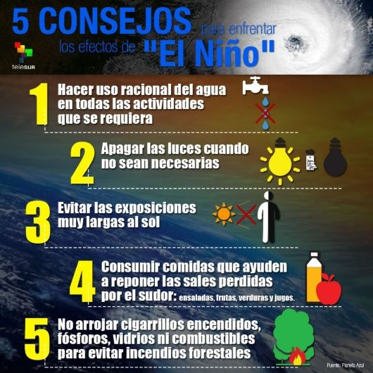
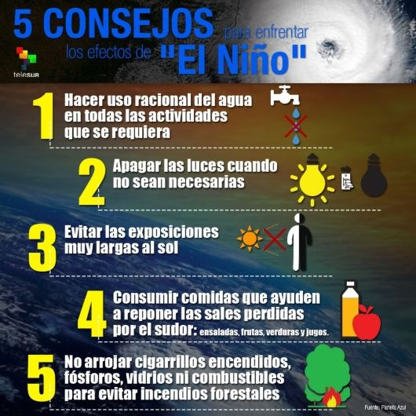

Informacion
Mapa de los efectos de El Niño en los países de todo del mundo
| -América Central y del Sur. | Afecto | informacion |
|---|---|---|
| Bolivia | 59.000 familias | A raíz de este clima inusual, más de 30.000 hectáreas de cultivos han sido afectadas en las zonas del altiplano y los valles, perjudicando sobre todo a los pequeños productores |
| Colombia | 800.000 personas | Entre ellas los más de 200 niños y niñas que han muerto durante los últimos años en la región de Guajira , se ha reducido drásticamente poniendo en riesgo los medios de vida de muchos pescadores y agricultores que dependen del río para subsistir e irrigar sus tierras. |
| Cuba | últimos 115 años | La peor sequía de los últimos 20 años, que ha causado pérdidas en las cosechas de entre el 50% y el 80% y un fuerte incremento en los precios de los alimentos, hasta del 200% en algunos casos. |
| Guatemala | 3,5 millones de personas | tienen Dificultades para acceder a alimentos debido a la sequía que comenzó en junio de 2014 y que se ha visto agravada por El Niño. |
| Honduras, | 250.000 personas | cerca de 1,3 millones de personas (el 15% de la población) están sufriendo los efectos de El Niño y el país enfrenta una de las sequías más graves de su historia |
| Ecuador | 000 | El llamado Fenómeno de El Niño o FEN arribaría a las costas del país entre noviembre y diciembre de 2023, pero el pico máximo de lluvias sería entre febrero y marzo de 2024 |